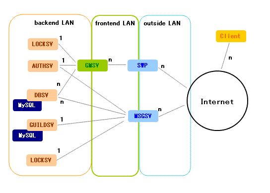
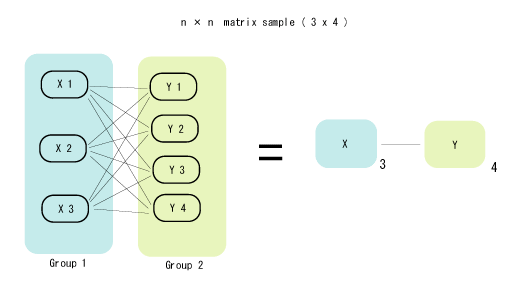

mm-suite クラスタリングの構造
mm-suite では、安価である程度の性能をもつPCワークステーションを
複数使って性能向上をはかる。
典型的な接続図は以下のようになる。

右下に n と書いてあるのは、さらに複数台に分散可能であることを意味する。
また、N 台のグループXマシンと M 台のグループYマシンが相互接続されるときは
マトリックス状に接続するので、
以下 の図のようにN*Mに接続されることになる。
以下の例では，グループXが3台，グループYが4台となっているため，
12本の接続がXとYの間に存在する．

以下に、各サーバの仕事内容を説明する。
- GMSV(GameServer)
ゲームのコンテンツ本体。
ゲーム内容を更新するときはこのサーバのコードと、
このサーバが読みこむデータファイルだけをいじることになる。
ゲーム内容が更新されるごとに C 言語レベルで変更され，
デバッグ不足のまま市場に投入されることが多いので
最もよくクラッシュしたり停止させられる
ことになる(ほとんど GMSV だけがクラッシュする)。
- SWP(SWitchingProxy)
VCE に標準添付のコネクションスイッチング用中継サーバ。
通信の処理(暗号、セッション管理など)を一手に引きうける。
CPU 時間は、もっぱら暗号の処理に使われる。
Pentium3 800MHz のマシンでは、 20Mbps 程度の暗号処理が可能である。
- AUTHSV (Authorization server)
ユーザーIDの認証機能だけを提供する認証サーバ。
認証とは、
パスワード管理と、そのユーザがログインしてもいいかどうかの確認である。
オンラインゲームを実運用する場合、
既存のユーザーIDデータベースに接続して認証をすることがほとんどなので、
認証機能だけを分離しておいたほうが機能拡張がやりやすくなる。
また性能のボトルネックも解消しやすくなる。
- DBSV (DataBase server)
ゲームのキャラクターなどを保管するデータサーバ。
NFS にすると性能低下がひどいので、 MySQL を使って高速化する。
このサーバにアクセスするための認証は、AUTHSV
によって提供されることを前提とする。
- GUILDSV (Guild server)
ゲーム内でキャラクターが参加可能なコミュニティ、ギルドを管理するサーバ。
ギルド内チャットや、
キャラクターごとに保存可能な一言メッセージの機能などを提供する。
メンバーリストやメッセージの保存には MySQL を用いる。
- MSGSV (MeSsaGe server)
インスタントメッセージの処理をするサーバ。
オフラインメッセージを保管する機能をもつ。
システム全体の起動手順
ハードウェアと回線と OS が完全に用意されている状態
(各マシンのIPアドレスがちゃんと設定されている)から、
システムを完全に起動し終わるまでのシナリオ。
- AUTHSV を起動．AUTHSV が他のシステムに接続する場合は，
そのシステムを起動．
- DBSV,GUILDSVが必要としている MySQL が立ちあがっていることを確認。
- DBSV,GUILDSV,LOCKSVを起動
- GMSV,MSGSV を起動
- 全 SWPを起動。
各サーバが落ちたときの処理
基本的に各サーバは、自分よりも後ろ(バックエンドに近いほう)のサーバが死んだ
ことを確認すると、強制終了するか、一定時間ごとに再接続を試みるかどちらかの
動作をする。強制終了するのは、
DBSV/LOCKSV が落ちたことを確認した GMSVと、DBSVが落ちたことを確認したMSGSV である。
それ以外の接続は、一定時間おきに再接続する。
状態ファイルとリモートモニタリング
すべてのサーバは、設定ファイルで指定された場所に、
一定時間ごとにシリアル番号がついた「状態ファイル」を出力する。
リモートからこのファイルを取りだし続けることによって、
各サーバの調子を調べることができる。
各ファイルのフォーマットは統一されている。
そのフォーマットは「状態ファイルのフォーマット」
で解説されている。
index に戻る
Copyright 2000-2005 CommunityEngine Inc. All rights reserved.